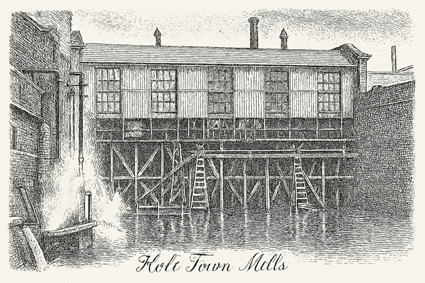

The Industrial Revolution (1750 - 1850)
The Industrial Revolution, taking firm hold in Britain from the mid-eighteenth century and reaching its zenith in
the nineteenth, profoundly altered Lancashire, transforming it from a county of pastoral parishes, woollen
fulling mills, and scattered proto-industry into the undisputed heartland of global cotton manufacturing.
Mechanised spinning and weaving—driven by Hargreaves's jenny, Arkwright's water frame, Crompton's mule, and
Watt's steam engine—coupled with canal and railway expansions, abundant coal, and Liverpool's transatlantic cotton
imports, created explosive growth in urban centres such as Manchester (Cottonopolis), Rochdale, Oldham, and Bolton.
This shift brought immense wealth to some while disrupting traditional agrarian and gentry economies, prompting many
established families to invest in factories, mills, and trade, or to relocate toward mercantile opportunities, thereby
adapting their influence to the new industrial order.
The Holts of Lancashire, long established as Rochdale parish gentry with ancient seats at Stubley Hall near Littleborough
and Castleton Hall south of Rochdale—held across centuries from medieval origins through the Tudor and Stuart eras—embodied
this transition from landed proprietors to active participants in commerce and industry.** The senior gentry line, rooted
in manorial rents, water mills for earlier textile processing, and county offices, saw its direct hold on these estates
wane: Castleton Hall passed to merchant buyers like the Walmsleys in 1772, and Stubley followed suit in time, reflecting
broader pressures on traditional landownership. The Holt families demonstrated characteristic pragmatism,
everaging Rochdale's strategic position near Manchester's markets, the Roch valley's water power, and emerging coal
supplies to engage in the cotton boom, brewing, and related ventures.
Branches of the Holts embraced the era's opportunities across key sectors. David "Quaker" Holt founded Holt Town Mills
in Manchester around 1785, establishing a pioneering "factory colony"—an integrated site of spinning and weaving mills
with associated worker housing—that exemplified early industrial paternalism in Cottonopolis at the revolution's outset,
though it encountered financial difficulties by the 1790s. In brewing, Joseph Holt established his eponymous Manchester
brewery in 1849, building a substantial enterprise; his son, Sir Edward Holt (created 1st Baronet of Cheetham in 1928),
expanded it into a major industrial concern while rising as a philanthropist, civic figure, and advocate for public health
reforms. From Rochdale roots, George Holt Senior relocated to Liverpool as a cotton broker, accumulating wealth vital to
Lancashire's raw material supply; his son Alfred Holt (1829–1911) engineered innovative compound steam engines and founded
the Blue Funnel Line (Ocean Steam Ship Company) in 1865, operating efficient vessels for Far Eastern trade that underpinned the
cotton import chain essential to the mills, with his brother George also involved in the Lamport & Holt shipping line and
owning Sudley House.
Collateral and lesser lines contributed locally as well. Thomas Holt ran operations at Lane End Mill in the Heywood/Rochdale
district during the mid-nineteenth century, initially in cotton spinning partnerships before adapting to flock production
from textile by-products, a practical niche in the region's resource-recycling economy. Other connections appear in
Rochdale's pioneering cooperative movement, with Holts among the founders of the Rochdale Society of Equitable
Pioneers in 1844. Through these diverse paths—from textile mills and factories to brewing empires, cotton brokerage, and
global shipping—the Holts preserved their lineage's prominence, shifting from Civil War-era Royalist loyalties and
gentry status to commercial success that helped define Lancashire as Britain's industrial powerhouse. This adaptability
ensured the family's enduring legacy amid the transformative smoke and steam of the age.
Holt Town Mills
Holt Town Mills stood in the Holt Town district of Manchester, an early industrial settlement developed along of the River Medlock. Established in the late eighteenth and early nineteenth centuries, the mills were part of the region’s rapidly expanding cotton industry, drawing power first from water and later from steam. Around them grew a dense cluster of workers’ housing, workshops, and canals, forming one of Manchester’s characteristic mill communities.
The Holt Town Mills complex typically comprised large multi-storey brick buildings with rows of tall windows to maximise light for spinning and weaving. Over time, the area became closely associated with industrial life—shift work, noise, smoke, and the constant movement of goods and people. Although much has since been demolished or redeveloped, the name “Holt Town” preserves the memory of the mills and the families whose livelihoods depended on them.
Holt Town was created in the early nineteenth century by the industrialist David Holt, who developed the area as one of Manchester’s earliest planned factory colonies. Situated along the River Medlock, the settlement was designed to bring mills, workshops, and workers’ housing together in a single, self‑contained industrial community. The factory colony model aimed to provide a stable workforce close to the mills, reducing absenteeism and improving productivity. Rows of modest brick cottages were built beside the spinning and weaving rooms, with narrow streets, shared yards, and communal facilities forming a tightly knit industrial landscape. Workers lived only steps away from the machinery that powered their livelihoods, creating a life shaped entirely by the demands of the mill.
Holt Town became known as a distinctive enclave within Manchester’s expanding industrial sprawl — a place where housing, labour, and manufacturing were deliberately integrated. Although much of the original colony has since been redeveloped, the name “Holt Town” preserves the memory of David Holt’s experiment in industrial planning and the community that grew around his mills.
Grace's Guide a the leading source of historical information on industry and manufacturing in Britain covers the Holt Town Mills.

Slaters Directories Manchester
Slater’s Directories, notably for Northern England are comprehensive 19th-century resources containing alphabetical
lists of residents, professional/commercial classified trades, and lists of gentry, clergy, and nobility. They include
town histories, descriptions, population statistics, and post office information.
These are the entries for Holt in various directories for Manchester and Salford.
Scholes Directory Manchester & Salford 1794 Click here
Lewis's Directory Manchester & Salford 1788 Click here
Scholes Directory Manchester & Salford 1797 Click here
Pigot & Dean Directory Manchester & Salford 1821-2 Click here
Pigot & Slater's Directory Manchester & Salford 1841 Click here
Slater's Directory Manchester & Salford 1851 Click here
Whellan Directory Manchester & Salford 1853 Click here
Slater's Directory Manchester 1855 Click here
Slater's Directory Manchester 1861 Click here
Slater's Directory Manchester 1863 Click here
Slater's Directory Manchester 1871 Click here
Slater's Directory Manchester 1881 Click here
Slater's Directory Manchester 1891 Click here